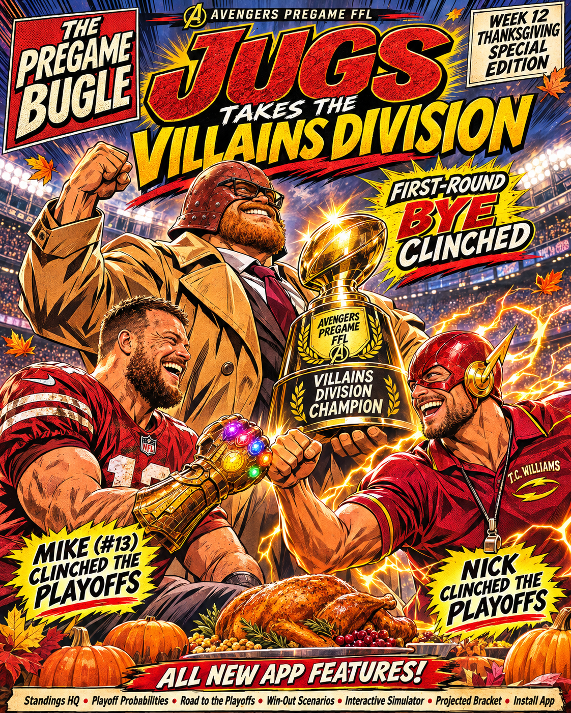

THREE TEAMS FEAST, THE REST FIGHT FOR SCRAPS — AND THE COMMISH DELIVERS

Thanksgiving came early for three Avengers Pregame franchises.
The Juggernauts Jumbo Package officially claimed the Villains Division title and secured a first-round bye. Riding a six-game winning streak, the Jugs have earned themselves a little extra time at the Thanksgiving table.
Meanwhile, InfinityBrocklet and Flash 23 Blast have officially punched their playoff tickets. Mike and Nick can breathe a little easier, although playoff positioning remains on the menu.
A Thanksgiving Gift From the Commissioner
The revamped Standings HQ introduces playoff probabilities, individual playoff paths, clinching scenarios and the all-new Interactive Playoff Scenario Simulator.
Managers can manually select the winners of upcoming matchups and instantly see how those outcomes affect projected playoff probabilities, seeding and the postseason bracket. Want to know what happens if you win out but your rival loses? Simulate it yourself.
Alyssa, Travis and Aaron should especially enjoy this feature as they fight for their postseason lives.
You'll also notice a new Install App button on the homepage, which provides simple instructions for adding League HQ to your iPhone or Android home screen. Don't be a complete dumbass searching through the group chat for the link every Sunday. Put it on your damn home screen.
With two weeks remaining, three teams have secured their invitations. Everyone else is still fighting for a seat at the table.
Happy Thanksgiving, Avengers Pregame. The turkey is temporary. The championship is forever.